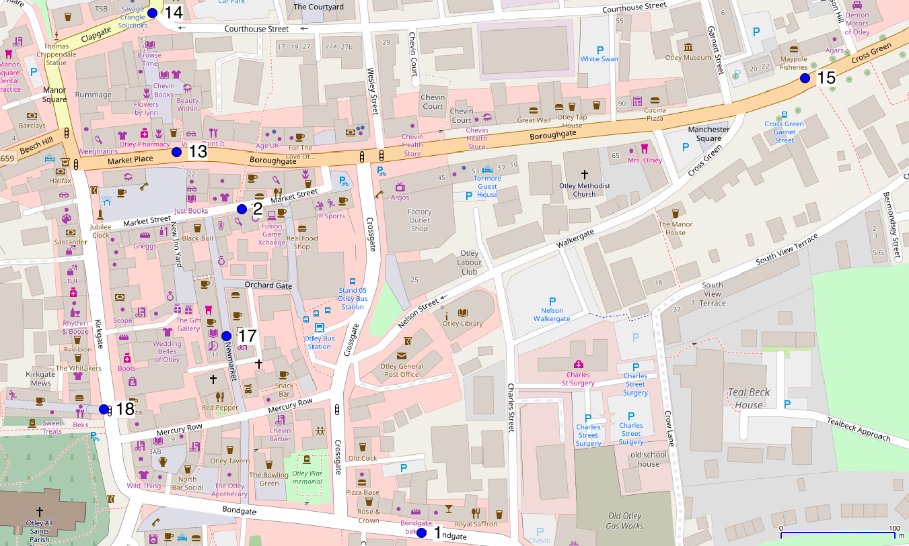
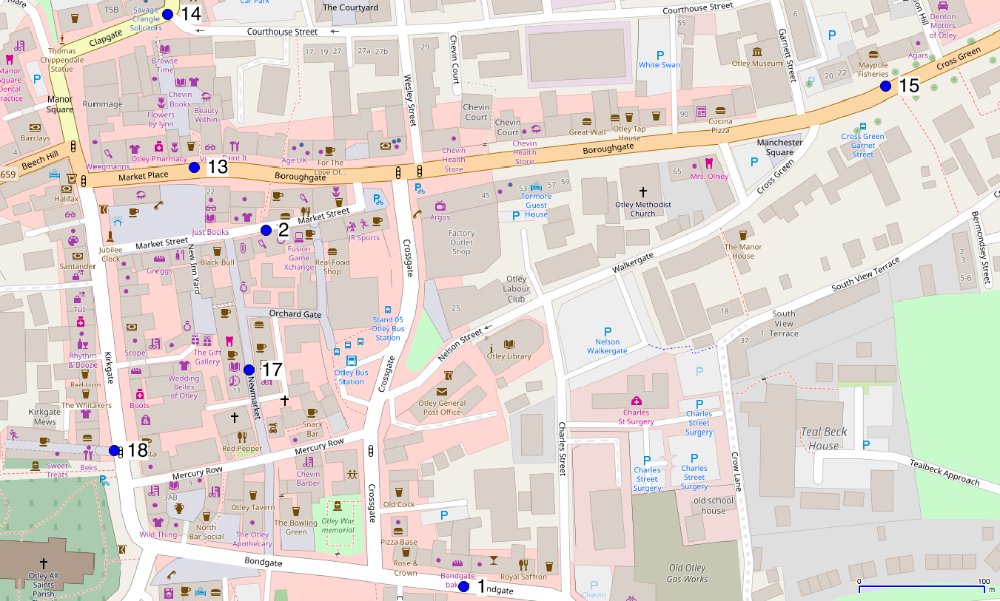
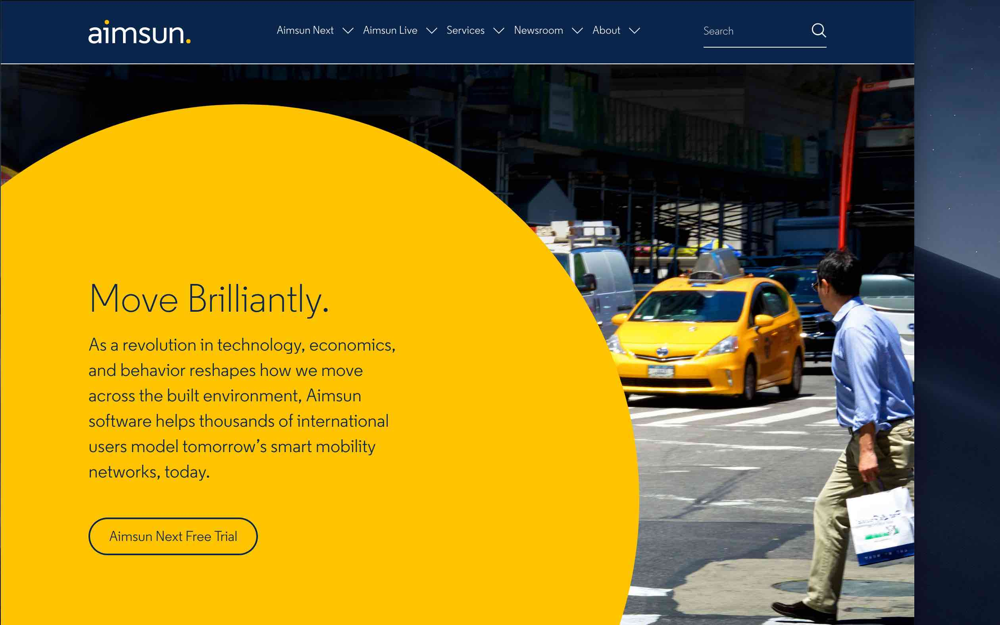

Simulating cities with streaming data and a suite of (agent-based?) models
Nick Malleson, Stelios Theophanous, Rich Romano, Nik Lomax
These slides: https://urban-analytics.github.io/dust/presentations.html
How many people are there in the city centre?
We need to better understand urban flows:
Crime – how many possible victims?
Pollution – who is being exposed? Where are the hotspots?
Economy – can we attract more people to our city centre?
Health – can we encourage more active travel?
More broadly: Understanding urban dynamics
Outline
Simulating urban flows with three models:
Surf: surf.leeds.ac.uk
Aimsun: www.aimsun.com
Mistral: www.itrc.org.uk
Incorporating streams of data:
Dust: dust.leeds.ac.uk
Simulating Urban Flows (surf)
3 year research project funded by the UK ESRC
Modelling a small town, using real footfall counters
Ultimately stream real-time data into the model dynamically
Modelling Footfall
Wi-Fi footfall counters (Noggin, CDRC). Case study: Otley, West Yorkshire
 

Aimsun
Traffic modelling tool
"Your Personal Mobility Modeling Lab"
Surf does not allow for congestion, driving behaviour, traffic lights, etc
Aim: Surf will create the journeys, Aimsun will model them
But who are the agents?
Mistral (ITRC)
Large, multi-institution project (7 universities & 50 other partners)
"Provides concepts, models and evidence to inform the analysis, planning and design of national infrastructure."
Leeds is creating high-resolution population projections
Aim: integrate Mistral to seed the individual-level synthetic population, and use it to forecast future population demographics and volume
Data Assimilation for Agent-Based Models (DUST)
5-year research project (€1.5M)
Funded by the European Research Council
Main aim: create new methods for dynamically assimilating data into agent-based models.
City Simulation with Agent-Based Modelling
Problem: diverse data that describe urban dynamics
Payment/loyalty cards, transport smart cards, mobile phone interactions, footfall/traffic counters, etc., etc.
How to combine to create a holistic representation
Solution: build an agent-based model
Implement virtual 'people' (agents)
Optimise different aspects using all available data
Problem: Models diverge from reality
Cities are complex
Human behaviour is difficult to predict
A model will quickly diverge from reality
We need a way to assimilate up to date data into models...
Dynamic Data Assimilation
Used in meteorology and hydrology to constrain models closer to reality.
Try to improve estimates of the true system state by combining:
Noisy, real-world observations
Model estimates of the system state
Should be more accurate than data / observations in isolation.
Ensemble Kalman Filter (EnKF)

Conclusion
Overall aim: simulating cities using streams of (real time) data and a suite of models
We want to be able to simulate cities, assimilating real time 'smart city' data as they emerge to reduce uncertainty (and prevent divergence).
Integrate three disparate models:
Surf: estimates the behaviour of the individuals
Aimsun: simulates traffic
Mistral: generates the synthetic population
Simulating cities with streaming data and a suite of (agent-based?) models
Nick Malleson, Stelios Theophanous, Rich Romano, Nik Lomax
These slides: https://urban-analytics.github.io/dust/presentations.html